A/B Compartment Calling Benchmark#
This notebook contains the code to reproduce Figure 4 and S14-S17.
Required data are:
Su et al, 2020, Cell: chromosome 2 p-arm and whole chromosome
Download the first four tsv from https://zenodo.org/records/3928890
Uncomment
proc_su_cell_2020(args.datadir)and run in terminalThis outputs ../data/su_cell_2020/chromosome2_p-arm_replicate.csv and ../data/su_cell_2020/chromosome2.csv
ChIP-seq data of human IMR-90
data.json: chipseq_imr90
[1]:
import os
import numpy as np
import pandas as pd
from scipy import stats
from matplotlib import pyplot as plt
import seaborn as sns
from sklearn.cluster import KMeans
import anndata as ad
from utils import out_dire
from utils.data import DataTree
import arcfish as af
dtree = DataTree("../data")
[2]:
%reload_ext autoreload
%autoreload 2
[3]:
su = "../data/su_cell_2020"
Chromosome 2 p-arm full data#
[4]:
loader = af.pp.FOF_CT_Loader(f"{su}/chromosome2_p-arm_replicate.csv")
[5]:
p1 = os.path.join(out_dire, "chromosome2_p-arm_replicate.h5ad")
if not os.path.exists(p1):
adata = loader.create_adata("chr2")
af.tl.median_pdist(adata, inplace=True)
af.pp.filter_normalize(adata)
adata.write_h5ad(p1, compression="gzip")
else:
adata = ad.read_h5ad(p1)
med_dist = adata.varp["med_dist"]
[6]:
adata
[6]:
AnnData object with n_obs × n_vars = 4848 × 357
var: 'Chrom_Start', 'Chrom_End'
uns: 'Chrom'
layers: 'X', 'Y', 'Z'
varp: 'count_X', 'count_Y', 'count_Z', 'med_dist', 'raw_var_X', 'raw_var_Y', 'raw_var_Z', 'var_X', 'var_Y', 'var_Z'
[7]:
fig, axes = plt.subplots(1, 4, figsize=(14, 3))
wts = af.pp.axis_weight(adata, inplace=False)
for i, (c, w) in enumerate(zip(["X", "Y", "Z"], wts)):
mat = adata.varp[f"raw_var_{c}"]**.5
af.pl.pairwise_heatmap(mat, ax=axes[i], vmax=1000, rasterized=True)
axes[i].set_title(f"{c}-axis Median Difference ({w:.2f})")
af.pl.pairwise_heatmap(med_dist, ax=axes[3], rasterized=True)
axes[3].set_title("Median 3D Distance (nm)")
fig.savefig(os.path.join(out_dire, "su_parm_pdist.pdf"), bbox_inches="tight")
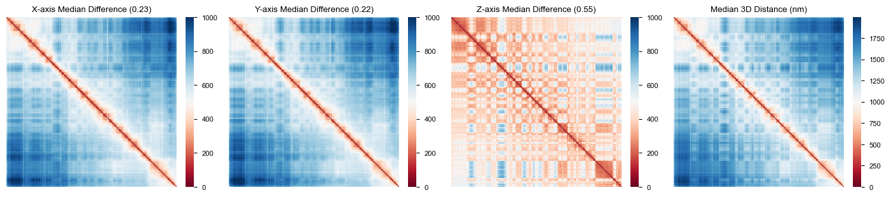
[15]:
fig = plt.figure(figsize=(14, 2.7))
figs = fig.subfigures(1, 3, width_ratios=[9.05, 3.5, 4])
axes = figs[0].subplots(1, 4, width_ratios=[1, 1, 1, 0.05])
pdiff = np.stack([adata.varp[f"pdiff_{c}"] for c in ["X", "Y", "Z"]])
for i, (c, ax) in enumerate(zip(["X", "Y", "Z"], axes[:3])):
af.pl.pairwise_heatmap(pdiff[i], cbar_ax=axes[-1], vmin=0, vmax=1000, rasterized=True, ax=ax)
ax.set(title=f"{c}-axis Median Pairwise Difference")
ax = figs[1].subplots()
af.pl.pairwise_heatmap(adata.varp["med_dist"], vmin=0, vmax=2000, rasterized=True,
title="Median Pairwise Distance (nm)", ax=ax)
uidx = np.triu_indices_from(pdiff[0], 1)
plt_df = (
pd.DataFrame(pdiff[:,*uidx], index=["X", "Y", "Z"]).T
.melt(var_name="axis", value_name="diff")
)
ax = figs[2].subplots()
c1, c2 = plt.colormaps["RdBu"](80), plt.colormaps["RdBu"](200)
sns.violinplot(
plt_df, x="axis", y="diff", hue="axis", width=0.4,
fill=True, alpha=0.5,
palette={"X": c1, "Y": c1, "Z": c2}, linewidth=1.5, ax=ax,
inner_kws=dict(box_width=10, whis_width=2, color=sns.color_palette("dark")[0])
)
ax.grid(False)
ax.set(xlabel="", ylabel="Median Pairwise Difference")
fig.savefig(os.path.join(out_dire, "su_parm_pairwise_diff.pdf"), bbox_inches="tight")

[8]:
caller = af.tl.ABCaller(0, "hg38", cutoff=500, sigma=1.9, method="pca")
res_sf1 = caller.call_cpmt(adata)
caller = af.tl.ABCaller(0, "hg38", method="axes")
res_sf2 = caller.call_cpmt(adata)
/Users/redfishhh/Documents/research/MultiplexedFISH/SnapFISH2/arcfish/tools/cpmt.py:194: UserWarning: Centromere position not found in the imaging region. Calling A/B compartments for the whole chromosome.
warnings.warn(
/Users/redfishhh/Documents/research/MultiplexedFISH/SnapFISH2/arcfish/tools/cpmt.py:194: UserWarning: Centromere position not found in the imaging region. Calling A/B compartments for the whole chromosome.
warnings.warn(
[9]:
import pyBigWig
# Already 250Kb binned, same as su et al
with pyBigWig.open(dtree["rao_cell_2014","imr90","compartments"]) as bw:
cpmt_vals = []
for _, row in adata.var.iterrows():
v = bw.values(adata.uns["Chrom"], row.Chrom_Start, row.Chrom_End)
v = stats.mode(np.array(v)[~np.isnan(v)])[0]
cpmt_vals.append([row.Chrom_Start, row.Chrom_End, v])
cpmt_vals = pd.DataFrame(cpmt_vals, columns=["s1", "e1", "val"])
cpmt_vals["c1"] = adata.uns["Chrom"]
cpmt_vals = cpmt_vals[["c1", "s1", "e1", "val"]]
cpmt_vals["cpmt"] = (cpmt_vals.val <= 0).astype(int)
len(cpmt_vals)
[9]:
357
[10]:
bed_paths = [
os.path.join(out_dire, "chr2_p-arm_sf1.bed"),
os.path.join(out_dire, "chr2_p-arm_sf2.bed"),
]
for p, df in zip(bed_paths, [res_sf1, res_sf2]):
df = df.copy()
df.iloc[:-1,2] = df["s1"].iloc[1:]
df[df.cpmt==0].iloc[:,:3].to_csv(
p, index=False, sep="\t", header=False
)
[11]:
fig, axes = plt.subplots(1, 2, figsize=(7.3, 3))
af.pl.pairwise_heatmap(med_dist, vmax=1500, rasterized=True, ax=axes[0])
axes[0].set_title("Assignment from PC1")
af.pl.cpmt_bars(res_sf1.cpmt.values, ax=axes[0])
af.pl.pairwise_heatmap(med_dist, vmax=1500, rasterized=True, ax=axes[1])
axes[1].set_title("Assignment from ArcFISH")
af.pl.cpmt_bars(res_sf2.cpmt.values, ax=axes[1])
fig.savefig(os.path.join(out_dire, "su_parm_pdist_assign.pdf"), bbox_inches="tight")
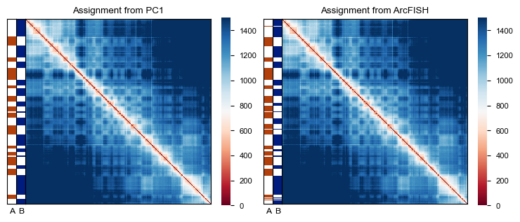
[12]:
cpmt1, cpmt2 = res_sf1.cpmt.values, res_sf2.cpmt.values
np.sum((cpmt1 - cpmt2) != 0), np.sum((cpmt1 - cpmt2) != 0)/len(cpmt1)
[12]:
(27, 0.07563025210084033)
[13]:
hic_cpmt = (cpmt_vals.val <= 0).astype(int)
np.sum((cpmt1 - hic_cpmt) != 0), np.sum((hic_cpmt - cpmt2) != 0)
[13]:
(56, 57)
[14]:
df = res_sf2
fig, axes = plt.subplots(3, 1, figsize=(14, 3), sharex=True)
for i, c in enumerate(["x", "y", "z"]):
af.pl.cpmt_vals(df[f"eig_{c}"].values, ax=axes[i])
axes[i].set_ylabel(f"{c.upper()}-Axis")
dmin, dmax = df["s1"].min()/1e6, df["e1"].max()/1e6
fig.supxlabel(f"1D Genomic Location ({dmin:.2f}-{dmax:.2f} Mb)", fontsize=8)
fig.supylabel("2nd Eigenvector", fontsize=8)
out_name = os.path.join(out_dire, "chr2_parm_eig.pdf")
fig.savefig(out_name, bbox_inches="tight")
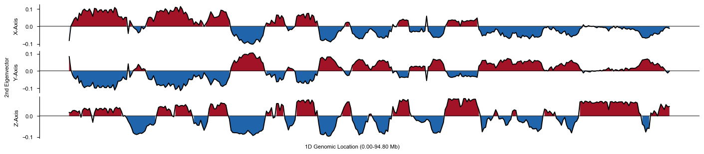
[15]:
from utils.maps import cpmt_enrichment
fig = cpmt_enrichment(
adata, res_sf1, res_sf2, "chipseq_imr90", dtree,
up_rglt=["H3K4me3", "H3K36me3", "H3K27ac", "H3K4me1", "H3K9ac"],
down_rglt=["H3K9me3"], name1="PC1", name2="ArcFISH"
)
out_name = os.path.join(out_dire, "chr2_parm_full_log2.pdf")
fig.savefig(out_name, bbox_inches="tight")
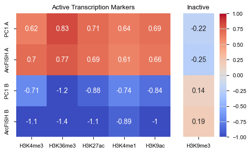
[16]:
for mk in ["H3K4me3", "H3K36me3", "H3K27ac", "H3K4me1", "H3K9ac", "H3K9me3"]:
print(dtree["chipseq_imr90", mk, "bigWig"])
../data/chipseq_imr90/ENCFF518GFI.bigWig
../data/chipseq_imr90/ENCFF314QXF.bigWig
../data/chipseq_imr90/ENCFF222IQN.bigWig
../data/chipseq_imr90/ENCFF148PNW.bigWig
../data/chipseq_imr90/ENCFF682HNO.bigWig
../data/chipseq_imr90/ENCFF733CJA.bigWig
[20]:
df = res_sf2
fig, axes = plt.subplots(3, 1, figsize=(7, 3), sharex=True)
for i, c in enumerate(["x", "y", "z"]):
sns.lineplot(df, x="s1", y=f"eig_{c}", color="y", ax=axes[i])
axes[i].spines['bottom'].set_visible(False)
xmin, xmax = axes[i].get_xlim()
axes[i].hlines([0], xmin=xmin, xmax=xmax, color="k", alpha=0.5)
axes[i].set(xlim=(xmin, xmax), ylim=(-0.12, 0.12), xticks=[])
axes[i].set(ylabel=f"{c}-Axis".title())
axes[i].fill_between(
df["s1"], df[f"eig_{c}"], 0, where=df[f"eig_{c}"]>=0,
alpha=0.5, color="r"
)
axes[i].fill_between(
df["s1"], df[f"eig_{c}"], 0, where=df[f"eig_{c}"]<=0,
alpha=0.5, color="b"
)
axes[i].grid(False)
dmin, dmax = df["s1"].min()/1e6, df["e1"].max()/1e6
fig.supxlabel(f"1D Genomic Location ({dmin:.2f}-{dmax:.2f} Mb)", fontsize=8)
fig.supylabel("2nd Eigenvector", fontsize=8)
fig.suptitle("Chromosome 2, p-arm, 1000 traces")
out_name = os.path.join(out_dire, "chr2_parm_1ktr_eig.pdf")
fig.savefig(out_name, bbox_inches="tight")
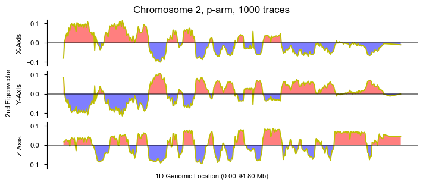
Varying number of traces#
[19]:
pca_df = []
for i in range(10):
f = os.path.join(out_dire, f"cpmt_pca_replicate_{i}.csv")
pca_df.append(pd.read_csv(f))
pca_df = pd.concat(pca_df).pivot(
index="s1", columns=["num_cells", "replicate"], values="cpmt"
)
sf2_df = []
for i in range(10):
f = os.path.join(out_dire, f"cpmt_replicate_{i}.csv")
sf2_df.append(pd.read_csv(f))
sf2_df = pd.concat(sf2_df).pivot(
index="s1", columns=["num_cells", "replicate"], values="cpmt"
)
[20]:
d1df = adata.var.reset_index(drop=True)
d1df["Chrom"] = adata.uns["Chrom"]
d1df = d1df[["Chrom", "Chrom_Start", "Chrom_End"]]
enrich_df_byn = []
for marker in dtree["chipseq_imr90"]:
chip_df = pd.read_csv(
dtree["chipseq_imr90",marker,"peak"], sep="\t",
header=None, usecols=[0, 1, 2]
)
chip_df.columns = ["c1", "s1", "e1"]
out_ls = []
for chr_id in pd.unique(d1df.Chrom):
sub_df = d1df[d1df["Chrom"]==chr_id].copy()
ints1 = sub_df.iloc[:,1:].values
ints2 = chip_df[chip_df["c1"]==chr_id][["s1","e1"]].values
out_ls.append(sub_df[af.tl.overlap(ints1, ints2)])
chipseq_marked = pd.concat(out_ls, ignore_index=True).rename({
"Chrom":"c1", "Chrom_Start":"s1", "Chrom_End":"e1"
}, axis=1)["s1"].values
for met, df in zip(["PC1", "ArcFISH"], [pca_df, sf2_df]):
marked_count = df.loc[chipseq_marked].sum(axis=0).to_frame("TP_B")
m, p = len(chipseq_marked), df.shape[0]
a, b = p - df.sum(axis=0), df.sum(axis=0)
marked_count["A"] = np.log2(((m - marked_count.TP_B) / a) / (m/p))
marked_count["B"] = np.log2((marked_count.TP_B / b) / (m/p))
marked_count = marked_count[["A", "B"]].reset_index().melt(
id_vars=["num_cells", "replicate"], var_name="cpmt", value_name="fold"
)
marked_count["method"] = met
marked_count["marker"] = marker
enrich_df_byn.append(marked_count)
enrich_df_byn = pd.concat(enrich_df_byn, ignore_index=True)
[21]:
hic_df = cpmt_vals.set_index("s1")[["cpmt"]]
hic_enrich = []
for marker in dtree["chipseq_imr90"]:
chip_df = pd.read_csv(
dtree["chipseq_imr90",marker,"peak"], sep="\t",
header=None, usecols=[0, 1, 2]
)
chip_df.columns = ["c1", "s1", "e1"]
out_ls = []
for chr_id in pd.unique(d1df.Chrom):
sub_df = d1df[d1df["Chrom"]==chr_id].copy()
ints1 = sub_df.iloc[:,1:].values
ints2 = chip_df[chip_df["c1"]==chr_id][["s1","e1"]].values
out_ls.append(sub_df[af.tl.overlap(ints1, ints2)])
chipseq_marked = pd.concat(out_ls, ignore_index=True).rename({
"Chrom":"c1", "Chrom_Start":"s1", "Chrom_End":"e1"
}, axis=1)["s1"].values
df = hic_df
marked_count = df.loc[chipseq_marked].sum(axis=0).to_frame("TP_B")
m, p = len(chipseq_marked), df.shape[0]
a, b = p - df.sum(axis=0), df.sum(axis=0)
marked_count["A"] = np.log2(((m - marked_count.TP_B) / a) / (m/p))
marked_count["B"] = np.log2((marked_count.TP_B / b) / (m/p))
marked_count = marked_count[["A", "B"]]
marked_count["marker"] = marker
hic_enrich.append(marked_count)
hic_enrich = pd.concat(hic_enrich, ignore_index=True)
hic_enrich.set_index("marker", inplace=True)
[23]:
fig, axes = plt.subplots(1, 7, figsize=(14, 2), width_ratios=[1]*6+[0.2])
markers = ["H3K4me3", "H3K36me3", "H3K27ac", "H3K4me1", "H3K9ac", "H3K9me3"]
c1, c2 = plt.colormaps.get_cmap("RdBu")(50), plt.colormaps.get_cmap("RdBu")(230)
colors = {"PC1": c1, "ArcFISH": c2}
for i, marker in enumerate(markers):
plt_df = enrich_df_byn[enrich_df_byn.marker == marker].copy()
plt_df["x"] = "abc" + plt_df["num_cells"].astype(str)
plt_df = plt_df[plt_df.cpmt == "A"]
sns.pointplot(plt_df, x="x", y="fold", hue="method", errorbar=("se", 2), linewidth=2,
capsize=.2, markersize=4, marker="D", palette=colors, ax=axes[i])
axes[i].axhline(hic_enrich.loc[marker,"A"], color="k", alpha=0.5, linestyle="--", label="Hi-C (Rao)")
sns.stripplot(plt_df, x="x", y="fold", hue="method",
palette=colors, alpha=.7, s=4, ax=axes[i])
axes[i].set(title=marker, xlabel="Number of Traces", ylabel="Log2 Enrichment")
xticklabels = [t.get_text()[3:] for t in axes[i].get_xticklabels()]
axes[i].set(xticks=axes[i].get_xticks(), xticklabels=xticklabels)
axes[i].grid(False)
handles, labels = axes[i].get_legend_handles_labels()
axes[i].get_legend().remove()
axes[6].legend(handles[:3], labels[:3], loc="center", labelspacing=2, bbox_to_anchor=(0.5, 0.5))
axes[6].axis("off")
fig.savefig(os.path.join(out_dire, "chr2_parm_enrich_point.pdf"), bbox_inches="tight")
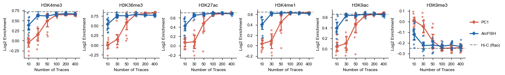
[25]:
for marker in markers:
plt_df = enrich_df_byn[enrich_df_byn.marker == marker].copy()
sub_df = plt_df[(plt_df["num_cells"]==30)&(plt_df.cpmt == "A")]
x = sub_df[sub_df["method"]=="PC1"].fold.values
y = sub_df[sub_df["method"]=="ArcFISH"].fold.values
print(f"mean1: {x.mean():.4f}, mean2: {y.mean():.4f}", end=", ")
print(f"P-value={stats.mannwhitneyu(x, y)[1]:.4f}")
mean1: 0.1517, mean2: 0.6285, P-value=0.0017
mean1: 0.1470, mean2: 0.7571, P-value=0.0002
mean1: 0.0880, mean2: 0.6527, P-value=0.0002
mean1: 0.0889, mean2: 0.6127, P-value=0.0002
mean1: 0.1026, mean2: 0.6350, P-value=0.0002
mean1: -0.0476, mean2: -0.2248, P-value=0.0013
[26]:
hic_enrich
[26]:
| A | B | |
|---|---|---|
| marker | ||
| CTCF | 0.524054 | -0.825065 |
| POLR2A | 0.749474 | -1.632067 |
| SMC3 | 0.623225 | -1.111839 |
| H3K4me3 | 0.722634 | -1.500461 |
| H3K27ac | 0.707329 | -1.431457 |
| H3K27me3 | 0.318155 | -0.406134 |
| H3K4me1 | 0.643547 | -1.181229 |
| H3K36me3 | 0.841108 | -2.231104 |
| H3K9me3 | -0.251454 | 0.212952 |
| H3K9ac | 0.658550 | -1.235361 |
| H3K4me2 | 0.544615 | -0.878505 |
| H3K79me2 | 0.875723 | -2.558624 |
| H4K20me1 | 0.831866 | -2.156039 |
Fewer traces and whole chromosome#
[27]:
adata3 = loader.create_adata("chr2")[:30]
med_dist3 = af.tl.median_pdist(adata3, inplace=False)
af.pp.filter_normalize(adata3)
/Users/redfishhh/Documents/research/MultiplexedFISH/SnapFISH2/arcfish/utils/eval.py:34: ImplicitModificationWarning: Setting element `.varp['raw_var_X']` of view, initializing view as actual.
adata.varp[f"raw_var_{v}"] = raw_var[i]
[28]:
caller = af.tl.ABCaller(0, "hg38", False, cutoff=500, sigma=1.9, method="pca")
res_sf1_sub = caller.call_cpmt(adata3)
caller = af.tl.ABCaller(0, "hg38", False, method="axes")
res_sf2_sub = caller.call_cpmt(adata3)
[29]:
bed_paths = [
os.path.join(out_dire, "chr2_p-arm_replicate_hic.bed"),
os.path.join(out_dire, "chr2_p-arm_replicate_sf1.bed"),
os.path.join(out_dire, "chr2_p-arm_replicate_sf2.bed"),
]
for p, df in zip(bed_paths, [cpmt_vals, res_sf1_sub, res_sf2_sub]):
df = df.copy()
df.iloc[:-1,2] = df["s1"].iloc[1:]
df[df.cpmt==0].iloc[:,:3].to_csv(
p, index=False, sep="\t", header=False
)
[30]:
from utils.maps import permute_cpmt_heatmap
fig, axes = plt.subplots(3, 2, figsize=(7, 8))
axes = axes.flatten()
af.pl.pairwise_heatmap(med_dist, vmax=1500, rasterized=True, ax=axes[0])
axes[0].set_title("PC1")
af.pl.cpmt_bars(res_sf1_sub.cpmt.values, ax=axes[0])
permute_cpmt_heatmap(res_sf1_sub.cpmt.values, adata, axes[1])
af.pl.pairwise_heatmap(med_dist, vmax=1500, rasterized=True, ax=axes[2])
axes[2].set_title("ArcFISH")
af.pl.cpmt_bars(res_sf2_sub.cpmt.values, ax=axes[2])
permute_cpmt_heatmap(res_sf2_sub.cpmt.values, adata, axes[3])
af.pl.pairwise_heatmap(med_dist, vmax=1500, rasterized=True, ax=axes[4])
axes[4].set_title("Bulk Hi-C (Rao)")
af.pl.cpmt_bars(cpmt_vals.cpmt.values, ax=axes[4])
permute_cpmt_heatmap(cpmt_vals.cpmt.values, adata, axes[5])
fig.savefig(os.path.join(out_dire, "su_parm_sub_assign.pdf"), bbox_inches="tight")
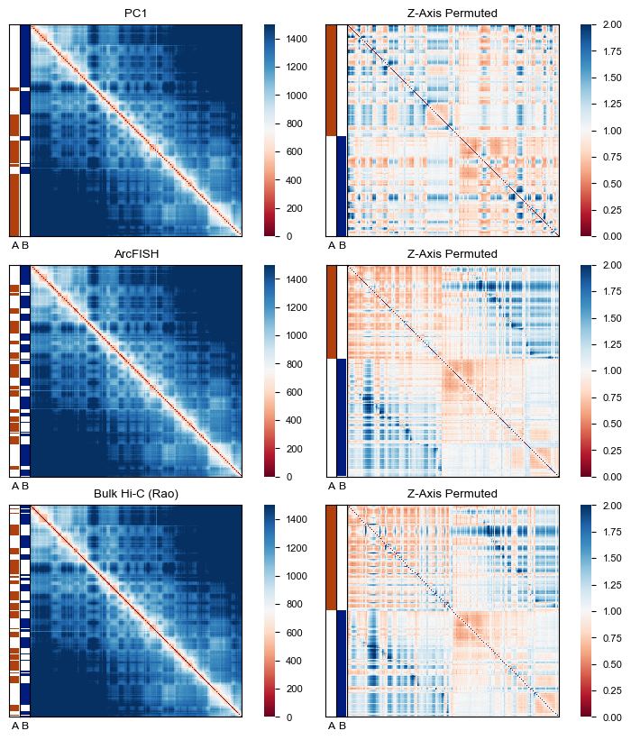
[31]:
from utils.maps import cpmt_enrichment
fig = cpmt_enrichment(
adata, res_sf1_sub, res_sf2_sub, "chipseq_imr90", dtree,
up_rglt=["H3K4me3", "H3K36me3", "H3K27ac", "H3K4me1", "H3K9ac"],
down_rglt=["H3K9me3"], name1="PC1", name2="ArcFISH"
)
fig.suptitle("Log2 Fold Change (p-Arm, 30 Traces)")
out_name = os.path.join(out_dire, "chr2_parm_30tr_log2.pdf")
fig.savefig(out_name, bbox_inches="tight")
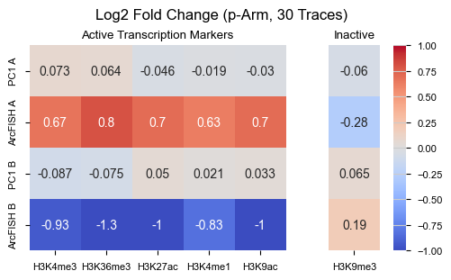
[39]:
loader2 = af.pp.FOF_CT_Loader(f"{su}/chromosome2.csv")
p2 = os.path.join(out_dire, "chromosome2.h5ad")
if not os.path.exists(p2):
adata2 = loader2.create_adata("chr2")
af.tl.median_pdist(adata2, inplace=True)
af.pp.filter_normalize(adata2)
adata2.write_h5ad(p2, compression="gzip")
else:
adata2 = ad.read_h5ad(p2)
med_dist2 = adata2.varp["med_dist"]
[40]:
adata2
[40]:
AnnData object with n_obs × n_vars = 3029 × 935
var: 'Chrom_Start', 'Chrom_End'
uns: 'Chrom'
layers: 'X', 'Y', 'Z'
varp: 'count_X', 'count_Y', 'count_Z', 'med_dist', 'raw_var_X', 'raw_var_Y', 'raw_var_Z', 'var_X', 'var_Y', 'var_Z'
[34]:
import pyBigWig
# Already 250Kb binned, same as su et al
with pyBigWig.open(dtree["rao_cell_2014","imr90","compartments"]) as bw:
cpmt_vals_2 = []
for _, row in adata2.var.iterrows():
v = bw.values(adata2.uns["Chrom"], row.Chrom_Start, row.Chrom_End)
v = stats.mode(np.array(v)[~np.isnan(v)])[0]
cpmt_vals_2.append([row.Chrom_Start, row.Chrom_End, v])
cpmt_vals_2 = pd.DataFrame(cpmt_vals_2, columns=["s1", "e1", "val"])
cpmt_vals_2["cpmt"] = (cpmt_vals_2.val <= 0).astype(int)
len(cpmt_vals_2)
[34]:
935
[36]:
fig = plt.figure(figsize=(14, 2.7))
figs = fig.subfigures(1, 3, width_ratios=[9.05, 3.5, 4])
axes = figs[0].subplots(1, 4, width_ratios=[1, 1, 1, 0.05])
pdiff = np.stack([adata2.varp[f"pdiff_{c}"] for c in ["X", "Y", "Z"]])
for i, (c, ax) in enumerate(zip(["X", "Y", "Z"], axes[:3])):
af.pl.pairwise_heatmap(pdiff[i], cbar_ax=axes[-1], vmin=0, vmax=1000, rasterized=True, ax=ax)
ax.set(title=f"{c}-axis Median Pairwise Difference")
ax = figs[1].subplots()
af.pl.pairwise_heatmap(adata2.varp["med_dist"], vmin=0, vmax=2000, rasterized=True,
title="Median Pairwise Distance (nm)", ax=ax)
uidx = np.triu_indices_from(pdiff[0], 1)
plt_df = (
pd.DataFrame(pdiff[:,*uidx], index=["X", "Y", "Z"]).T
.melt(var_name="axis", value_name="diff")
)
ax = figs[2].subplots()
c1, c2 = plt.colormaps["RdBu"](80), plt.colormaps["RdBu"](200)
sns.violinplot(
plt_df, x="axis", y="diff", hue="axis", width=0.4,
fill=True, alpha=0.5,
palette={"X": c1, "Y": c1, "Z": c2}, linewidth=1.5, ax=ax,
inner_kws=dict(box_width=10, whis_width=2, color=sns.color_palette("dark")[0])
)
ax.grid(False)
ax.set(xlabel="", ylabel="Median Pairwise Difference")
fig.savefig(os.path.join(out_dire, "su_chr2_pairwise_diff.pdf"), bbox_inches="tight")

[41]:
caller = af.tl.ABCaller(0, "hg38", False, cutoff=500, sigma=1.9, method="pca")
res_sf1_chr2 = caller.call_cpmt(adata2)
caller = af.tl.ABCaller(0, "hg38", False, method="axes")
res_sf2_chr2 = caller.call_cpmt(adata2)
[42]:
from utils.maps import permute_cpmt_heatmap
fig, axes = plt.subplots(3, 2, figsize=(7, 8))
axes = axes.flatten()
af.pl.pairwise_heatmap(med_dist2, vmax=1500, rasterized=True, ax=axes[0])
axes[0].set_title("PC1")
af.pl.cpmt_bars(res_sf1_chr2.cpmt.values, ax=axes[0])
permute_cpmt_heatmap(res_sf1_chr2.cpmt.values, adata2, axes[1])
af.pl.pairwise_heatmap(med_dist2, vmax=1500, rasterized=True, ax=axes[2])
axes[2].set_title("ArcFISH")
af.pl.cpmt_bars(res_sf2_chr2.cpmt.values, ax=axes[2])
permute_cpmt_heatmap(res_sf2_chr2.cpmt.values, adata2, axes[3])
af.pl.pairwise_heatmap(med_dist2, vmax=1500, rasterized=True, ax=axes[4])
axes[4].set_title("Bulk Hi-C (Rao)")
af.pl.cpmt_bars(cpmt_vals_2.cpmt.values, ax=axes[4])
permute_cpmt_heatmap(cpmt_vals_2.cpmt.values, adata2, axes[5])
fig.savefig(os.path.join(out_dire, "su_chr2_assign.pdf"), bbox_inches="tight")
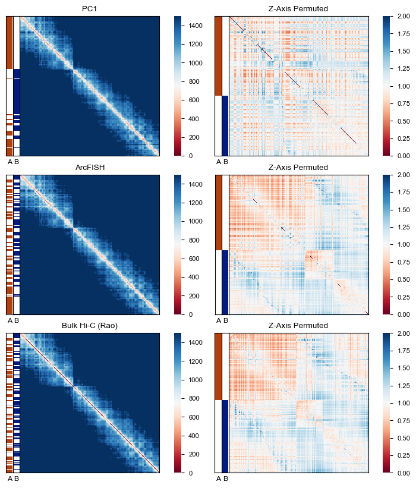
[43]:
shared_color = plt.colormaps["RdBu"](100)
raw_spe_color = plt.colormaps["RdBu"](10)
noi_spe_color = plt.colormaps["RdBu"](240)
color=[shared_color, raw_spe_color, noi_spe_color]
fig, axes = plt.subplots(1, 3, figsize=(6, 3), width_ratios=[1, 1, .5])
diff = res_sf1.cpmt.values - res_sf1_chr2.cpmt.values[:len(res_sf1)]
plt_df1 = pd.Series({"Shared": np.nansum(diff==0), "A as B": np.nansum(diff==-1),
"B as A": np.nansum(diff==1)}).to_frame("PC1")
diff = res_sf2.cpmt.values - res_sf2_chr2.cpmt.values[:len(res_sf2)]
plt_df2 = pd.Series({"Shared": np.nansum(diff==0), "A as B": np.nansum(diff==-1),
"B as A": np.nansum(diff==1)}).to_frame("ArcFISH")
plt_df = pd.concat([plt_df1, plt_df2], axis=1)
plt_df.T.plot(kind="bar", stacked=True, linewidth=.5, edgecolor="k",
color=color, width=0.4, ax=axes[0])
handles, labels = axes[0].get_legend_handles_labels()
axes[0].set(title="p-Arm Assignment Comparison")
diff = cpmt_vals_2.cpmt.values - res_sf1_chr2.cpmt.values[:len(cpmt_vals_2)]
plt_df1 = pd.Series({"Shared": np.nansum(diff==0), "A as B": np.nansum(diff==-1),
"B as A": np.nansum(diff==1)}).to_frame("PC1")
diff = cpmt_vals_2.cpmt.values - res_sf2_chr2.cpmt.values[:len(cpmt_vals_2)]
plt_df2 = pd.Series({"Shared": np.nansum(diff==0), "A as B": np.nansum(diff==-1),
"B as A": np.nansum(diff==1)}).to_frame("ArcFISH")
plt_df = pd.concat([plt_df1, plt_df2], axis=1)
plt_df.T.plot(kind="bar", stacked=True, linewidth=.5, edgecolor="k",
color=color, width=0.4, ax=axes[1])
handles, labels = axes[0].get_legend_handles_labels()
axes[1].set(title="Hi-C Assignment Comparison")
for i in range(2):
axes[i].set_xticks(axes[i].get_xticks())
axes[i].set_xticklabels(axes[i].get_xticklabels(), rotation=0)
axes[i].set(ylabel="Number of Imaging Loci")
axes[i].get_legend().remove()
axes[i].grid(False)
bar = axes[1].patches[i]
axes[1].text(bar.get_x()+bar.get_width()/2, bar.get_y()+bar.get_height()/2,
f"{bar.get_height()/len(cpmt_vals_2)*100:.1f}%", ha="center", verticalalignment="center")
bar = axes[0].patches[i]
axes[0].text(bar.get_x()+bar.get_width()/2, bar.get_y()+bar.get_height()/2,
f"{bar.get_height()/len(res_sf1)*100:.1f}%", ha="center", verticalalignment="center")
axes[2].legend(handles[:3], labels[:3], loc="center", labelspacing=2, bbox_to_anchor=(0.5, 0.5))
axes[2].axis("off")
fig.savefig(os.path.join(out_dire, "su_chr2_assign_comp.pdf"), bbox_inches="tight")
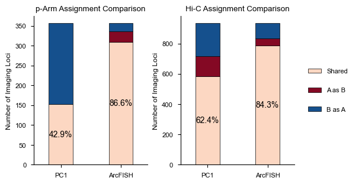
[44]:
from utils.maps import cpmt_enrichment
fig = cpmt_enrichment(
adata2, res_sf1_chr2, res_sf2_chr2, "chipseq_imr90", dtree,
up_rglt=["H3K4me3", "H3K36me3", "H3K27ac", "H3K4me1", "H3K9ac"],
down_rglt=["H3K9me3"], name1="PC1", name2="ArcFISH"
)
fig.suptitle("Log2 Fold Change (Entire Chromosome 2)")
out_name = os.path.join(out_dire, "chr2_3ktr_log2.pdf")
fig.savefig(out_name, bbox_inches="tight")
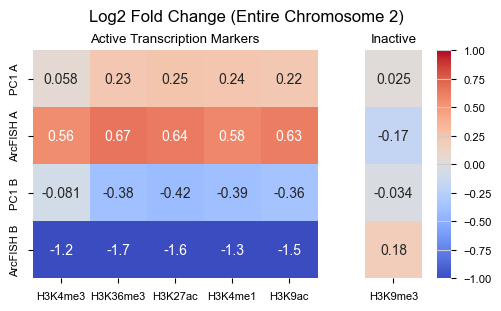
Weighted versus unweighted eigenvectors#
[45]:
df1 = res_sf2_chr2.copy()
df1["cpmt"] = KMeans(2, random_state=0).fit_predict(df1[["eig_x", "eig_y", "eig_z"]])
df2 = res_sf2_chr2.copy()
df2["cpmt"] = 1 - KMeans(2, random_state=0).fit_predict(df2[["wteig_x", "wteig_y", "wteig_z"]])
[48]:
fig = cpmt_enrichment(
adata2, df1, df2, "chipseq_imr90", dtree,
up_rglt=["H3K4me3", "H3K36me3", "H3K27ac", "H3K4me1", "H3K9ac"],
down_rglt=["H3K9me3"], name1="Raw", name2="Weighted"
)
fig.suptitle("Log2 Fold Change (Entire Chromosome 2)")
out_name = os.path.join(out_dire, "chr2_wteig_log2.pdf")
fig.savefig(out_name, bbox_inches="tight")
[49]:
from utils.maps import cpmt_enrichment
fig = cpmt_enrichment(
adata2, df1, df2, "chipseq_imr90", dtree,
up_rglt=["H3K4me3", "H3K36me3", "H3K27ac", "H3K4me1", "H3K9ac"],
down_rglt=["H3K9me3"], name1="Raw", name2="Weighted"
)
fig.suptitle("Log2 Fold Change of Epigenomic Markers")
out_name = os.path.join(out_dire, "chr2_wteig_log2.png")
fig.savefig(out_name, bbox_inches="tight", dpi=800)
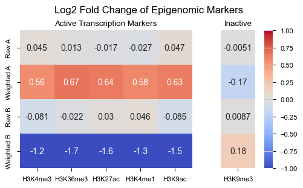
[21]:
fig = plt.figure(figsize=(9, 3))
figs = fig.subfigures(1, 3, width_ratios=[2, 0.1, 1.1])
ax = figs[0].add_subplot(121, projection="3d")
s1 = ax.scatter(*df1.iloc[:,4:7].values.T, c=df1["cpmt"], s=3, linewidths=0, cmap="RdBu")
ax.set_title("Raw 2nd Eigenvector", y=1)
ax.set_xlabel("x-axis", labelpad=-15)
ax.set_ylabel("y-axis", labelpad=-15)
ax.set_zlabel("z-axis", labelpad=-15)
for i, c in enumerate(["x", "y", "z"]):
ticks = np.linspace(*ax.get_w_lims()[i*2:i*2+2], 4, endpoint=True)
ax.set(**{f"{c}lim": (ticks[0], ticks[-1])})
ax.set(**{f"{c}ticks": ticks, f"{c}ticklabels": []})
ax.legend(
s1.legend_elements()[0][:1], ["A Compartment"],
ncol=2, bbox_to_anchor=(0, -0.1, 1, .1), loc="center right"
)
xlim, ylim = np.array(ax.get_xlim()), np.array(ax.get_ylim())
zlim = np.array(ax.get_zlim())
ax = figs[0].add_subplot(122, projection="3d")
ax.scatter(*df2.iloc[:,7:10].values.T, c=df2["cpmt"], s=3, linewidths=0, cmap="RdBu")
ax.set_title("Weighted 2nd Eigenvector", y=1)
ax.set_xlabel("x-axis", labelpad=-15)
ax.set_ylabel("y-axis", labelpad=-15)
ax.set_zlabel("z-axis", labelpad=-15)
ratio = np.ptp(ax.get_zlim())/np.ptp(zlim)
ax.set(xlim=xlim*ratio, ylim=ylim*ratio)
for i, c in enumerate(["x", "y", "z"]):
ticks = np.linspace(*ax.get_w_lims()[i*2:i*2+2], 4, endpoint=True)
ax.set(**{f"{c}lim": (ticks[0], ticks[-1])})
ax.set(**{f"{c}ticks": ticks, f"{c}ticklabels": []})
ax.legend(
s1.legend_elements()[0][1:], ["B Compartment"],
ncol=2, bbox_to_anchor=(0, -0.1, 1, .1), loc="center left"
)
ax = figs[2].add_subplot(projection="3d")
c = df1["e1"] < 91855520 # centromere position
s2 = ax.scatter(*df1.iloc[:,4:7].values.T, c=c, s=3, linewidths=0, cmap="Accent")
ax.set_title("Chromosome p-q Arm", y=1)
ax.set_xlabel("x-axis", labelpad=-15)
ax.set_ylabel("y-axis", labelpad=-15)
ax.set_zlabel("z-axis", labelpad=-15)
for i, c in enumerate(["x", "y", "z"]):
ticks = np.linspace(*ax.get_w_lims()[i*2:i*2+2], 4, endpoint=True)
ax.set(**{f"{c}lim": (ticks[0], ticks[-1])})
ax.set(**{f"{c}ticks": ticks, f"{c}ticklabels": []})
ax.legend(
s2.legend_elements()[0], ["p-arm", "q-arm"],
ncol=2, bbox_to_anchor=(0, -0.1, 1, .1), loc="center"
)
fig.savefig(os.path.join(out_dire, "chr2_kmeans.pdf"), bbox_inches="tight")
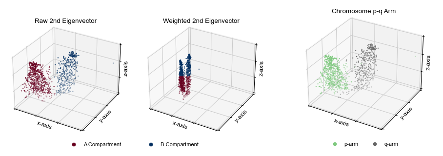